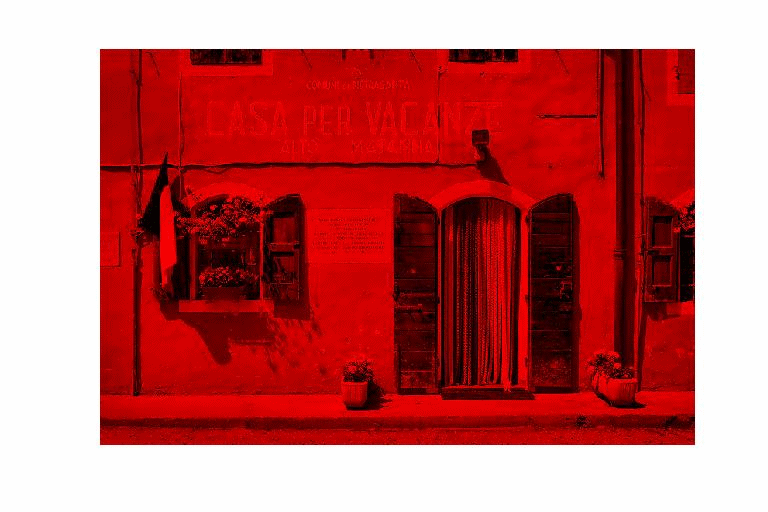
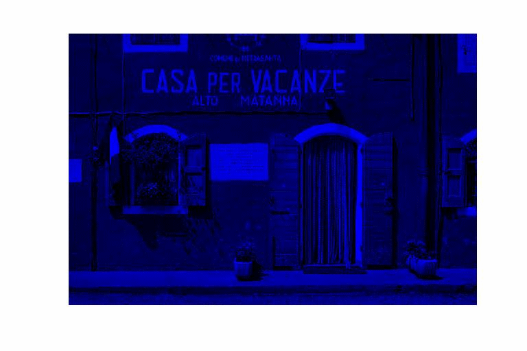
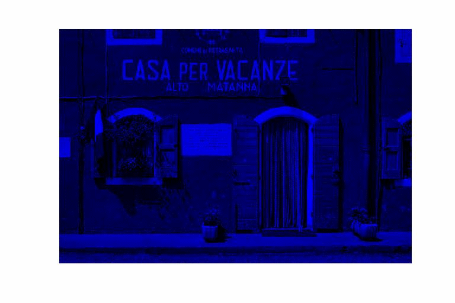

| DiscreteWavelets Toolbox |
Plot a digital image
ImagePlot(A)
ImagePlot(A,options)
ImagePlot(A) takes either a matrix (grayscale) or a 3-dimensional array (color) and plots it.
ImagePlot(A,options) allows the user to set three parameters. See Optional Arguments for more details.
There are four optional arguments that can be set for ImagePlot. The order of the parameters does not matter in the function call, but you must follow the standard convention 'Option', 'Value' when invoking the parameters.
In order to better view the plotted image, it is sometimes desirable to scale it. We can do this prior to calling ImagePlot by using either GammaCorrection or HistogramEQ. Another scaling option is available with ImagePlot. Setting 'LinearScaling' to 'True' (the default is 'False') linearly maps the interval [min(A),max(A)] to the interval [0,255] and rounds the results.
'LinearScaling' can also be used to facilitate viewing of images resulting from LeftHWT, LeftWT, RightHWT, and RightWT.
Setting 'LinearScaling' to 'LeftWT' causes the function to do the following to A:
In many cases, we wish to plot say the red channel of a color image. In this case, it is desirable to display the image with red intensities. Any matrix can be plotted in any color using the 'ChannelColor' option. The value that follows this option must be a 3-vector that represents an RGB color.
For example, the command ImagePlot(A,'ChannelColor',[1 0 0]) plots the matrix A using red intensities.
A plot title can be added using the 'Title' option. For example, ImagePlot(A,'Title','Here is a Picture') adds a title to the image plot.
Magnification can be set to make the output image size smaller or larger. The default value is 1 and if set, the value must be a positive number.
%Load all grayscale image files that come with the toolbox in cell array gry
gry=ImageNames('ImageType','GrayScale');
file = gry{7}; %Shows the name of the data file
A=ImageRead(file); %Load the image into matrix A
ImagePlot(A,'Title','A Dog'); %Plot the image
%Load all color images included with the toolbox
clr=ImageNames('ImageType','Color');
file = clr{4}; %Shows the name of the data file
A=ImageRead(file); %Load the image into 3-d array A
ImagePlot(A); %Plot the image
[R,G,B]=Split3D(A); %Split 3-D array into three matrices
figure
ImagePlot(R,'ChannelColor',[1 0 0]); %Plot the red channel
figure
ImagePlot(G,'ChannelColor',[0 1 0]); %Plot the green channel
figure
ImagePlot(B,'ChannelColor',[0 0 1]); %Plot the blue channel
 

ImageList, ImageNames, ImagePlot ShowThumbnails
© 2007-2008 Patrick Van Fleet